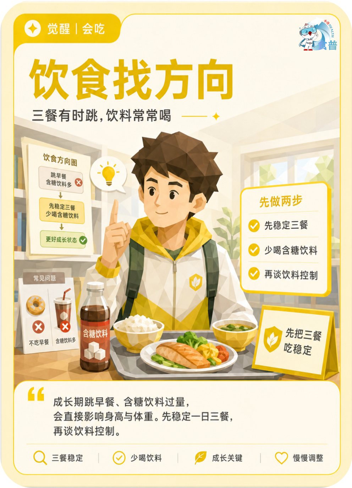

青少年与儿童
觉醒
会吃
K14
饮食找方向
三餐有时跳,饮料常常喝
成长期跳早餐、含糖饮料过量,会直接影响身高与体重。先稳定一日三餐,再谈饮料控制。
手机端可点击“打开原图”后长按图片保存；也可以直接长按上方图卡保存。

三餐有时跳,饮料常常喝
成长期跳早餐、含糖饮料过量,会直接影响身高与体重。先稳定一日三餐,再谈饮料控制。
手机端可点击“打开原图”后长按图片保存；也可以直接长按上方图卡保存。